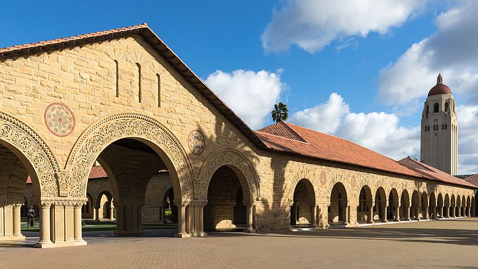
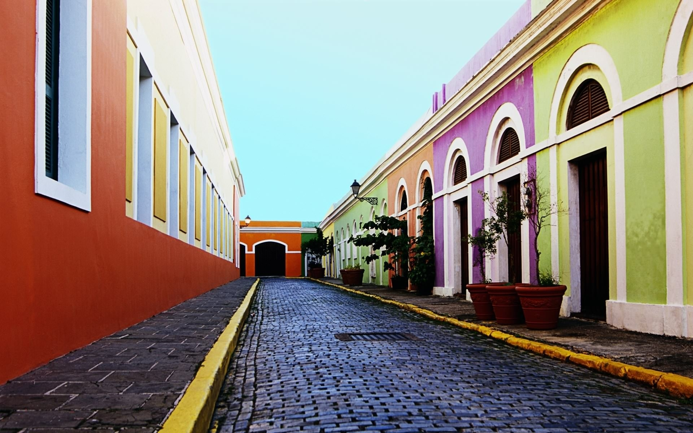
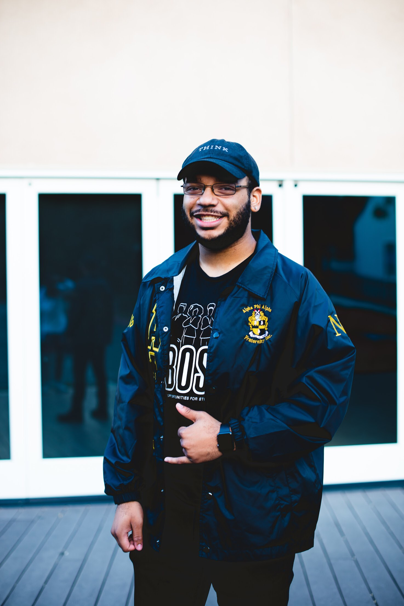

<!DOCTYPE html>

<!-- comments are made like this-->

<html lang="en-US">
<head>
    <title>Christian KeShawn Davis</title>
    <meta charset="UTF-8" name="viewport" content="width=device-width, initial-scale=1">
    <link rel="stylesheet" href="styles.css"/>
    <script src="scripts.js"></script>
</head>
</html>

<body>

    <div id = "page-wrapper">
        <div class="navBar-wrapper">
            <ul id="navBar">
                <li class="active"><a href="#main" onclick="navHighlight('main')">CKD</a></li>
                <li class="inactive"><a href="#about" onclick="navHighlight('about')">About Me</a></li>
                <li class="inactive"><a href="#projects" onclick="navHighlight('projects')">Projects</a></li>
                <li class="inactive"><a href="#beyond" onclick="navHighlight('beyond')">Beyond</a></li>
                <li class="inactive"><a href="#contact" onclick="navHighlight('contact')">Contact Me</a></li>
            </ul>
        </div>

        <div class="section" id="main">
            
            <h1 id="title"><strong>Christian KeShawn Davis</strong></h1>
            <p id="main_text"><i>I’m a first generation college student planning to bring diversity and new perspectives to the engineering field. I aim to find elegant solutions to complex problems.</i></p>
        </div>

        <div class="section" id="about">
            
            <div class="info_slide left">
                <h1>About Me</h1>
                <p>I was born on the West Side of Chicago. I graduated from Southland College Prep Charter High School in 2016 and now attend Stanford University. I am majoring in Computer Science with a focus in Biocomputation.</p>
                <p>I am a first-generation college student and am learning as I go to navigate my way through these spaces that were not designed for people like me. I am immensely grateful for and thankful to all of the people who came before me and made it possible for me to achieve what I have so far. There's a lot left for me to do and I'll never forget where I came from and what it took for me to get here.</p>
                <h2>What Drives Me</h2>
                <p>The farther I go into academia, the more acute the disparities in access are between different communities. One of my goals has become to use my education and the privilege I have gained to increase access to education and resources to communities of color.</p>
            </div>
        </div>

        <div class="section" id="projects">
            
            <div class="info_slide right">
                <h1>Projects</h1>
                <p>I've done things.</p>
            </div>
        </div>

        <div class="section" id="beyond">
            
            <div class="info_slide left">
                <h1>Beyond</h1>
                <p>I've done other things.</p>
            </div>
        </div>

        <div class="section" id="contact">
            
            <div class="info_slide center">
                <h1>Contact Me</h1>
                <p>I can be contacted.</p>
            </div>
        </div>

    </div>
</body>